Code
counties <- AOI::aoi_get(state = "conus", county = "all") |>
st_transform(5070)National Dam Inventory (NID): From Counts to Local Clustering
In this lab we will explore the impacts of tessellated surfaces and the modifiable areal unit problem (MAUP) using the National Dam Inventory maintained by the United States Army Corps of Engineers. The work requires writing reusable functions and careful consideration of feature aggregation/simplification, spatial joins, and data visualization. The end goal is to visualize the distribution of dams and their purposes across the country.
DISCLAIMER: This lab can be computationally intensive. For some steps you may be processing hundreds of millions of relations; run code chunk-by-chunk during development rather than knitting the whole document repeatedly. Your final knit may take a few minutes. Be proud — the report will summarize analyses over very large geometric relations.
This lab covers 4 main skills:
In addition to producing correct code and outputs, your submission should:
keep percentage for simplification? How did you balance computational efficiency with map detail?st_touches, st_contains) to identify and describe geometric relationships in the dam dataset that raw counts cannot reveal.Here we will prepare five tessellated surfaces from CONUS and write a function to plot them in a descriptive way.
First, we need a spatial file of CONUS counties. For future area calculations we want these in an equal area projection (EPSG:5070).
To achieve this:
get an sf object of US counties (AOI::aoi_get(state = "conus", county = "all"))
transform the data to EPSG:5070
counties <- AOI::aoi_get(state = "conus", county = "all") |>
st_transform(5070)For triangle based tessellations we need point locations to serve as our “anchors”.
To achieve this:
generate county centroids using st_centroid
Since, we can only tessellate over a feature we need to combine or union the resulting 3,108 POINT features into a single MULTIPOINT feature
Since these are point objects, the difference between union/combine is mute
anchors <- counties |>
st_centroid() |>
st_union()Tessellations/Coverage’s describe the extent of a region with geometric shapes, called tiles, with no overlaps or gaps.
Tiles can range in size, shape, area and have different methods for being created.
Some methods generate triangular tiles across a set of defined points (e.g. Voronoi and Delaunay triangulation)
Others generate equal area tiles over a known extent (st_make_grid)
For this lab, we will create surfaces of CONUS using using 4 methods, 2 based on an extent and 2 based on point anchors:
Tessellations :
st_voronoi: creates a Voronoi tessellation
st_triangulate: triangulates a set of points (not constrained)
Coverages:
st_make_grid: creates a square grid covering the geometry of an sf or sfc object
st_make_grid(square = FALSE): creates a hexagonal grid covering the geometry of an sf or sfc object
The side of coverage tiles can be defined by a cell resolution or a specified number of cell in the X and Y direction
For this step:
MULTIPOINT)MULTIPOINT)In addition to creating these 4 coverage’s we need to add an ID to each tile.
To do this:
add a new column to each tessellation that spans from 1:n().
Remember that ALL tessellation methods return an sfc GEOMETRYCOLLECTION, and to add attribute information - like our ID - you will have to coerce the sfc list into an sf object (st_sf or st_as_sf)
Last, we want to ensure that our surfaces are topologically valid/simple.
To ensure this, we can pass our surfaces through st_cast.
Remember that casting an object explicitly (e.g. st_cast(x, "POINT")) changes a geometry
If no output type is specified (e.g. st_cast(x)) then the cast attempts to simplify the geometry.
If you don’t do this you might get unexpected “TopologyException” errors.
id_and_cast <- function(x) {
x |>
st_as_sf() |> #convert to sf so we can add attributes
mutate(id = row_number()) |> #create unique tile ID
st_cast() #simplify/fix geometry to avoid errors
}
counties <- counties |>
id_and_cast()
voroni_tess <- st_voronoi(anchors) |>
st_collection_extract() |>
id_and_cast()
triangulated_tess <- st_triangulate(anchors) |>
st_collection_extract() |>
id_and_cast()
gridded_tess <- st_make_grid(counties, n = 70) |>
id_and_cast()
hexagon_tess <- st_make_grid(counties, n = 70, square = FALSE) |>
id_and_cast()If you plot the above tessellations you’ll see that the Voronoi, Delaunay triangulation, hexagon, and square grids all produce regions far beyond the boundaries of CONUS.
We need to cut these boundaries to CONUS borders.
To do this, we need two different approaches: - st_intersection() for Voronoi and Delaunay (these tessellations create geometries that extend infinitely/far beyond the study area; intersection clips them at the exact boundary) - st_filter() for hexagon and square grids (these regular grids are already designed to fit; filtering keeps only the tiles that intersect CONUS)
Either way, we’ll need a geometry of CONUS to serve as our clipping feature. We can get this by unioning our existing county boundaries.
conus_boundary <- st_union(counties) #Make boundary to clip toWith a single feature boundary, we must carefully consider the complexity of the geometry. Remember, the more points our geometry contains, the more computations needed for spatial predicates our differencing. For a task like ours, we do not need a finely resolved coastal boarder.
To achieve this:
Simplify your unioned border using the Visvalingam algorithm provided by rmapshaper::ms_simplify.
Choose what percentage of vertices to retain using the keep argument and work to find the highest number that provides a shape you are comfortable with for the analysis:
boundary_simplified <- rmapshaper::ms_simplify(conus_boundary,
keep = 0.1,
keep_shapes = TRUE)After simplification, verify the boundary is still valid and covers all dams:
# Check: Is the simplified boundary valid?
st_is_valid(boundary_simplified)
# Check: Does it still contain all of CONUS?
st_bbox(boundary_simplified) # Should cover roughly [-125, 24] to [-66, 49]
# Check: Visual comparison
plot(conus_boundary, main = "Original")
plot(boundary_simplified, main = "Simplified")Important distinction: This step simplifies the CONUS boundary container we use for clipping the tessellated surfaces. Simplification affects only the geometry of the clipping operation — it speeds up the intersection computation by reducing boundary vertices. Your tessellation tiles themselves remain high-resolution and unchanged. You are not simplifying the tessellation itself, only the container we clip with.
Once you are happy with your simplification, use the mapview::npts function to report the number of points in your original object, and the number of points in your simplified object.
How many points were you able to remove? What are the consequences of doing this computationally?
Answer: Around 10,000 points were removed. This will allow things to run smoother and faster, but it sacrifices detail and introduces some distortion.
mapview::npts(conus_boundary)[1] 11292mapview::npts(boundary_simplified)[1] 1145st_intersection() to cut these geometries at the CONUS boundary. These tessellations create boundaries that extend well beyond CONUS; intersection actually trims them.st_filter() to keep only tiles that touch CONUS. These grids are already regularly aligned; filtering just discards edge tiles without modifying them.voroni_tess <- st_intersection(voroni_tess, boundary_simplified)
triangulated_tess <- st_intersection(triangulated_tess, boundary_simplified)
gridded_tess <- st_filter(gridded_tess, boundary_simplified)
hexagon_tess <- st_filter(hexagon_tess, boundary_simplified)#The last step is to plot your tessellations. We don’t want to write out 5 ggplots (or mindlessly copy and paste r emo::ji(“smile”))
#Instead, lets make a function that takes an sf object as arg1 and a character string as arg2 and returns a ggplot object showing arg1 titled with arg2.
#For this function:
The name can be anything you chose, arg1 should take an sf object, and arg2 should take a character string that will title the plot
In your function, the code should follow our standard ggplot practice where your data is arg1, and your title is arg2
The function should also enforce the following: a white fill, a navy border, a size of 0.2, theme_void,a caption that reports the number of features in arg1
#You will need to paste character stings and variables together.
plot_tess <- function(arg1, arg2) {
ggplot() +
geom_sf(data = arg1,
fill = "white",
color = "navy",
linewidth = 0.2) +
labs(title = arg2,
caption = paste("Number of features:", nrow(arg1))) +
theme_void()
}Use your new function to plot each of your tessellated surfaces and the original county data (5 plots in total):
plot_tess(counties, "CONUS Counties")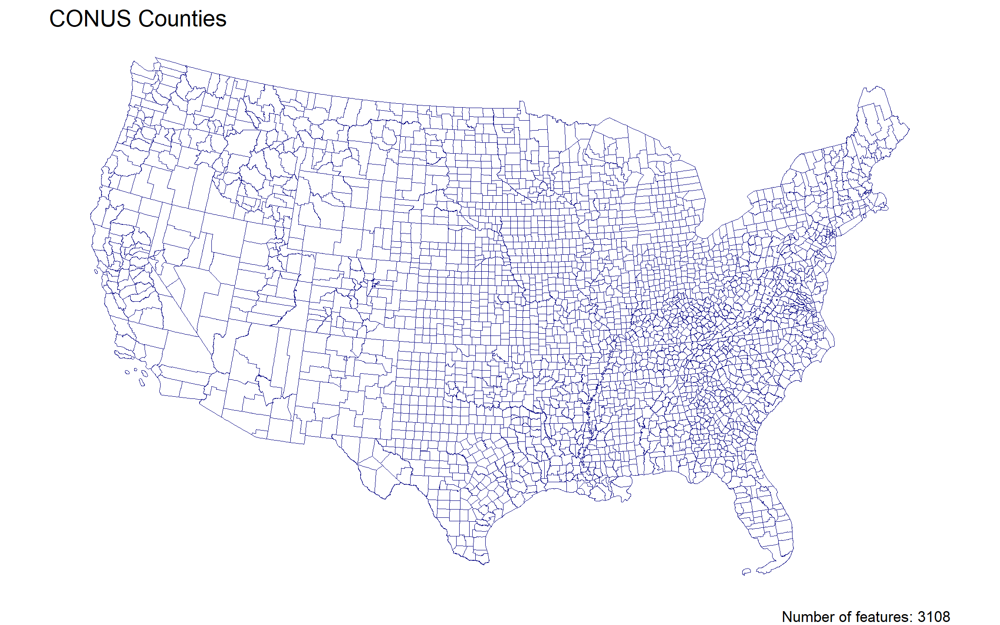
plot_tess(voroni_tess, "Voronoi Tessellation")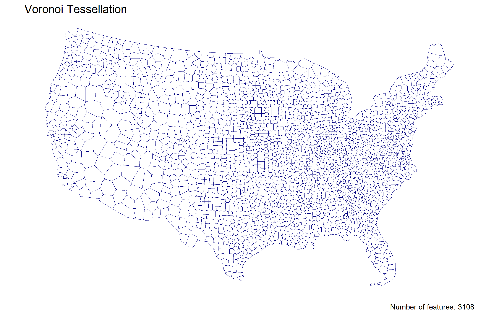
plot_tess(triangulated_tess, "Delaunay Triangulation")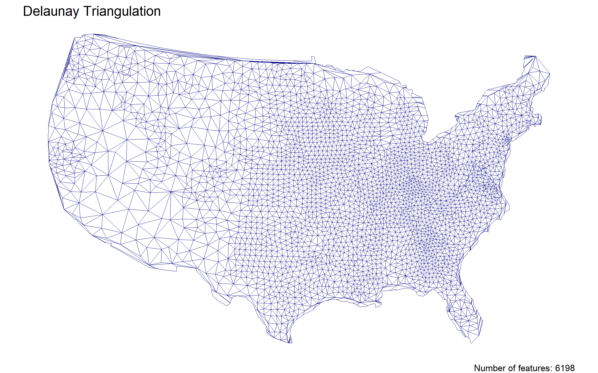
plot_tess(gridded_tess, "Square Grid")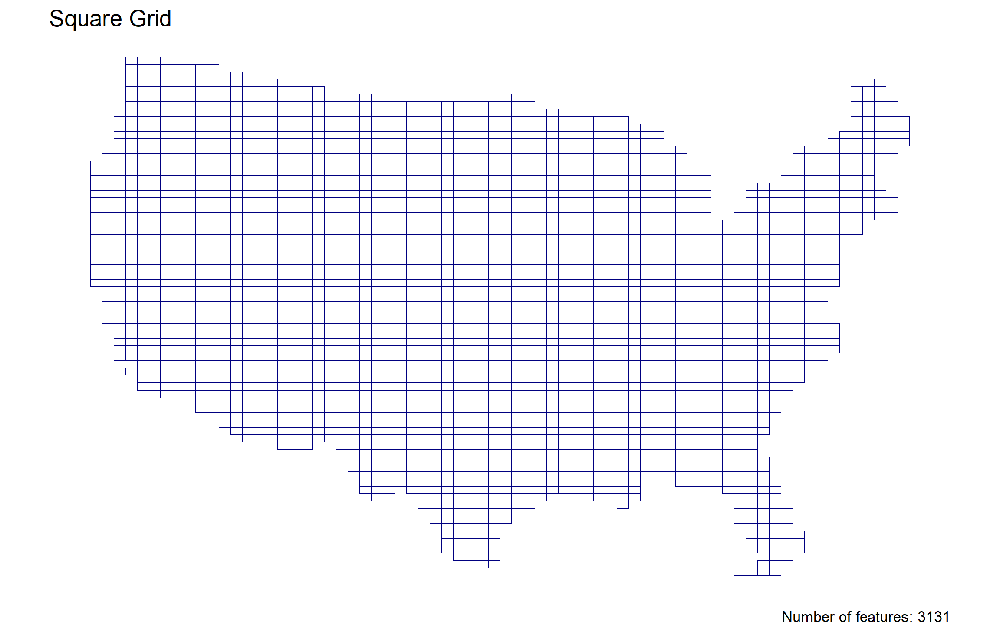
plot_tess(hexagon_tess, "Hexagonal Grid")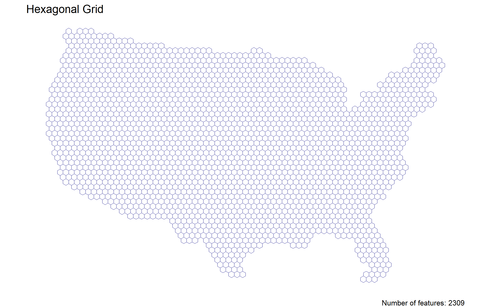
In this question, we will write out a function to summarize our tessellated surfaces.
First, we need a function that takes a sf object and a character string and returns a data.frame.
For this function:
The function name can be anything you chose, arg1 should take an sf object, and arg2 should take a character string describing the object
In your function, calculate the area of arg1; convert the units to km2; and then drop the units
Next, create a data.frame containing the following:
text from arg2
the number of features in arg1
the mean area of the features in arg1 (km2)
the standard deviation of the features in arg1
the total area (km2) of arg1
Return this data.frame
summarize_tess <- function(arg1, arg2) {
#calculate area, convert to km^2, drop units
areas <- st_area(arg1) |>
units::set_units("km^2") |>
units::drop_units()
#create and return a data.frame with summary stats
data.frame(
name = arg2, #text describing the object
n_features = nrow(arg1),
mean_area_km2 = mean(areas),#average feature area
sd_area_km2 = sd(areas), #standard deviation of feature areas
total_area_km2 = sum(areas))
}Use your new function to summarize each of your tessellations and the original counties.
summarize_tess(counties, "CONUS Counties") name n_features mean_area_km2 sd_area_km2 total_area_km2
1 CONUS Counties 3108 2605.05 3443.712 8096496summarize_tess(voroni_tess, "Voronoi Tessellation") name n_features mean_area_km2 sd_area_km2 total_area_km2
1 Voronoi Tessellation 3108 2604.757 2918.275 8095586summarize_tess(triangulated_tess, "Delaunay Triangulation") name n_features mean_area_km2 sd_area_km2 total_area_km2
1 Delaunay Triangulation 6198 1290.332 1598.287 7997475summarize_tess(gridded_tess, "Square Grid") name n_features mean_area_km2 sd_area_km2 total_area_km2
1 Square Grid 3131 2761.289 1.182225e-11 8645594summarize_tess(hexagon_tess, "Hexagonal Grid") name n_features mean_area_km2 sd_area_km2 total_area_km2
1 Hexagonal Grid 2309 3781.179 1.813366e-11 8730742Multiple data.frame objects can bound row-wise with bind_rows into a single data.frame
For example, if your function is called sum_tess, the following would bind your summaries of the triangulation and voroni object.
bind_rows(
sum_tess(triangulate_grid, "triangulation"),
sum_tess(voronoi_grid, "voronoi")
)summary_table <- bind_rows(
summarize_tess(counties, "CONUS Counties"),
summarize_tess(voroni_tess, "Voronoi Tessellation"),
summarize_tess(triangulated_tess, "Delaunay Triangulation"),
summarize_tess(gridded_tess, "Square Grid"),
summarize_tess(hexagon_tess, "Hexagonal Grid"))Once your 5 summaries are bound (2 tessellations, 2 coverage’s, and the raw counties) print the data.frame as a nice table using knitr/kableExtra/flextable or your preferred table formatting package.
| Name | Number of Features | Mean Area (km²) | SD Area (km²) | Total Area (km²) |
|---|---|---|---|---|
| CONUS Counties | 3108 | 2605.050 | 3443.712 | 8096496 |
| Voronoi Tessellation | 3108 | 2604.757 | 2918.275 | 8095586 |
| Delaunay Triangulation | 6198 | 1290.332 | 1598.287 | 7997475 |
| Square Grid | 3131 | 2761.289 | 0.000 | 8645594 |
| Hexagonal Grid | 2309 | 3781.179 | 0.000 | 8730742 |
Comment on the traits of each tessellation. Be specific about how these traits might impact the results of a point-in-polygon analysis in the contexts of the modifiable areal unit problem and with respect computational requirements.
Counties/Voronoi- This has a very large SD compared to the others.This shows that counties vary a lot in size meaning that the larger counties with naturally more points can have bias results in a point-in-polygon analysis. Meanwhile, the voronoi tessellation has a similar mean area and the same number of features, but a slightly lower SD. This likely means the areas are still uneven, but more balanced than counties.
Triangulation- The triangulation has way more features, a smaller mean area, and a lower SD. This shows the polygons are smaller and more consistent whcih can show more detail and reduce bias from large areas, Howveer, having nearly double the features increases the comuting time and can make results noisier.
Square/hexagonal- The square and hexagon grids has no SD, meaning every cell is exactly the same size with the hexagon cells being bigger due to the larger mean. This removes size-related bias for both, and the larger cell size will make things smoother in exchange for detail. Both have a larger total area than the others which can mean there is some over-coverage, which could affect counts.
The data we will analyze in this lab are from the U.S. Army Corps of Engineers National Dam Inventory (NID). This dataset documents ~91,000 dams in the United States and includes attributes such as design specifications, risk level, age, and purpose.
Dam management agencies face a critical question: Where are dams actually clustered, and how do I visualize that clustering in a way that supports infrastructure planning decisions? The answer depends on your choice of geographic boundaries—that is, your tessellation. Different tessellations will reveal different patterns of dam concentration. Your job in this question is to:
For the remainder of this lab we will analyze the distributions of these dams using point-in-polygon analysis.
In the tradition of this class - and true to data science/GIS work - you need to find, download, and manage raw data. THe NID dataset is available as a CSV download from the USACE website here. Grab the CSV.
readr::read_csv
janitor::clean_names() to standardize column names to snake_case (tidy data convention)!is.na())data.frame to a sf object by defining the coordinates and CRSThe NID CSV has messy column names (all caps with spaces). The janitor::clean_names() function converts them to clean snake_case (LONGITUDE → longitude, DAM NAME → dam_name). This is a lightweight utility that saves time and prevents typos in downstream code. It’s part of data wrangling best practice.
library(janitor)
# Prefer a local NID CSV named `nation.csv`; otherwise download to that filename
nid_url <- "https://nid.sec.usace.army.mil/api/nation/csv"
dir.create("data", showWarnings = FALSE)
nid_dest <- "data/nation.csv"
if (file.exists(nid_dest)) {
message("Using local NID file: ", nid_dest)
} else {
tryCatch({
message("Downloading NID CSV to: ", nid_dest)
download.file(nid_url, nid_dest, quiet = FALSE, mode = "wb")
}, error = function(e) {
message("NID download failed: ", e$message)
})
}
# read the CSV (will error if download failed and file missing)
if (!file.exists(nid_dest)) stop("NID CSV not found at ", nid_dest)
dams <- readr::read_csv(nid_dest, skip =1, show_col_types = FALSE) |>
janitor::clean_names()
usa <- AOI::aoi_get(state = "conus") %>%
st_union() %>%
st_transform(5070)
dams2 <- dams %>%
filter(!is.na(latitude)) %>%
st_as_sf(coords = c("longitude", "latitude"), crs = 4326) %>%
st_transform(5070) %>%
st_filter(usa)Following the in-class examples develop an efficient point-in-polygon function that takes:
arg1,arg2,arg3The function should make use of spatial and non-spatial joins, sf coercion and dplyr::count. The returned object should be input sf object with a column - n - counting the number of points in each tile.
CRS Matching: Ensure points and polygons are in the same CRS before calling st_join(). If they differ, use st_transform() to align them first.
Empty Polygons: st_join(...) %>% count(id) creates one row per intersection found. Polygons with zero intersections will appear in the result with n = 0 only if you use a left join (default for st_join()). If a polygon has no points, make sure your result still includes it; if not, use st_join(...) %>% right_join(...) or initialize counts explicitly.
Sparse vs. Dense Matrices: In this step you’re not creating matrices. However, in Q6.1 you’ll use st_touches(..., sparse = FALSE) to build neighbor matrices explicitly. Here in Q3, st_join() handles the spatial predicate internally (st_intersects by default), so you won’t set sparsity—just know that st_join() scales well to large datasets. For troubleshooting performance: if your function runs slowly with 91,000 dams, check whether your tessellation polygons are topologically simple (use st_is_valid()).
point_polygon <- function(arg1, arg2, arg3) {
#same CRS
if (st_crs(arg1) != st_crs(arg2)) {
arg1 <- st_transform(arg1, st_crs(arg2))
}
#Spatial join, then drop geometry, count
counts <- st_join(arg2, arg1) |>
sf::st_drop_geometry() |>
dplyr::count(.data[[arg3]], name = "n")
#Reattach counts to original polygons
result <- arg2 |>
dplyr::left_join(counts, by = arg3) |>
dplyr::mutate(n = ifelse(is.na(n), 0, n))
return(result)
}Apply your point-in-polygon function to each of your five tessellated surfaces where:
counties_dams <- point_polygon(dams2, counties, "id")
voronoi_dams <- point_polygon(dams2, voroni_tess, "id")
triangulated_dams <- point_polygon(dams2, triangulated_tess, "id")
square_dams <- point_polygon(dams2, gridded_tess, "id")
hexagon_dams <- point_polygon(dams2, hexagon_tess, "id")Lets continue the trend of automating our repetitive tasks through function creation. This time make a new function that extends your previous plotting function.
For this function:
The name can be anything you chose, arg1 should take an sf object, and arg2 should take a character string that will title the plot
The function should also enforce the following:
the fill aesthetic is driven by the count column n
the col is NA
the fill is scaled to a continuous viridis color ramp
theme_void
a caption that reports the number of dams in arg1 (e.g. sum(n))
plot_dams <- function(arg1, arg2) {
ggplot() +
geom_sf(data = arg1, aes(fill = n), color = NA) +
scale_fill_viridis_c() +
labs(
title = arg2,
caption = paste("Total Dams:", sum(arg1$n, na.rm = TRUE))) +
theme_void()
}Apply your plotting function to each of the 5 tessellated surfaces with Point-in-Polygon counts:
plot_dams(counties_dams, "Dams by County")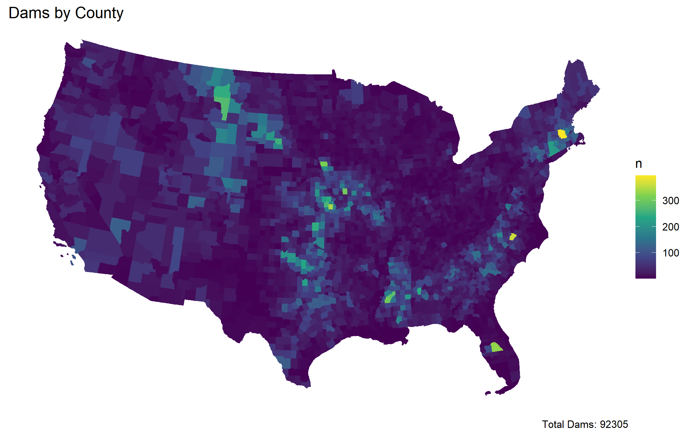
plot_dams(voronoi_dams, "Dams by Voronoi Tessellation")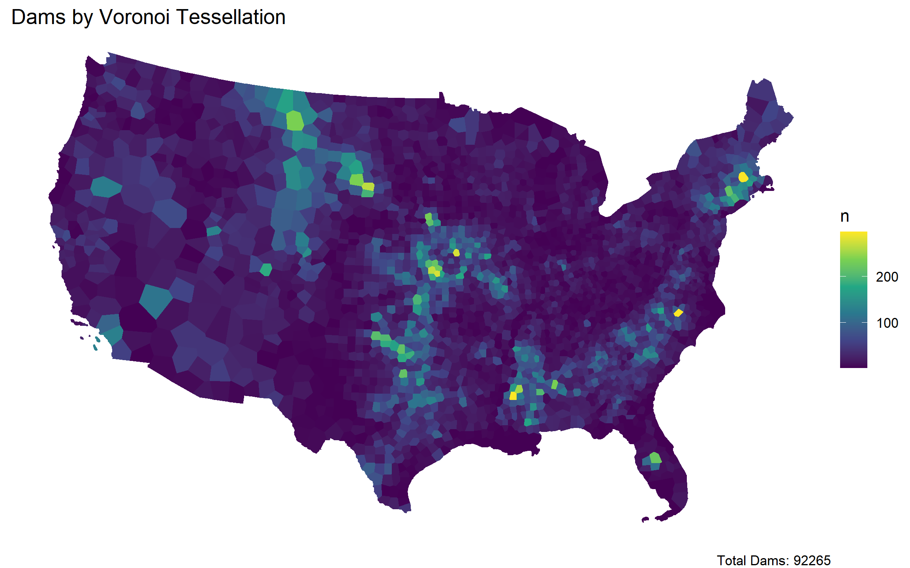
plot_dams(triangulated_dams, "Dams by Delaunay Triangulation")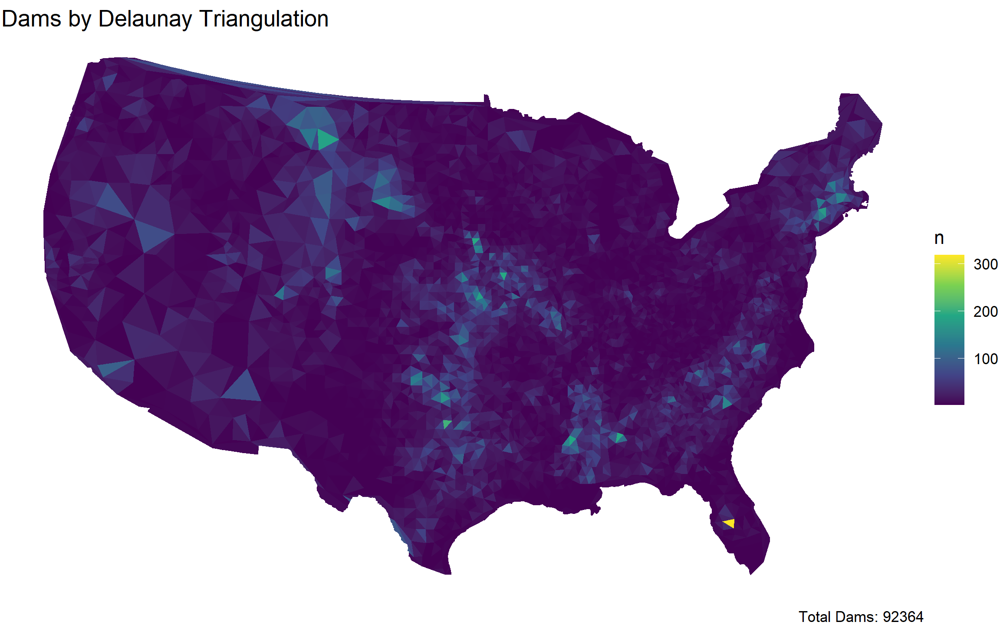
plot_dams(square_dams, "Dams by Square Grid")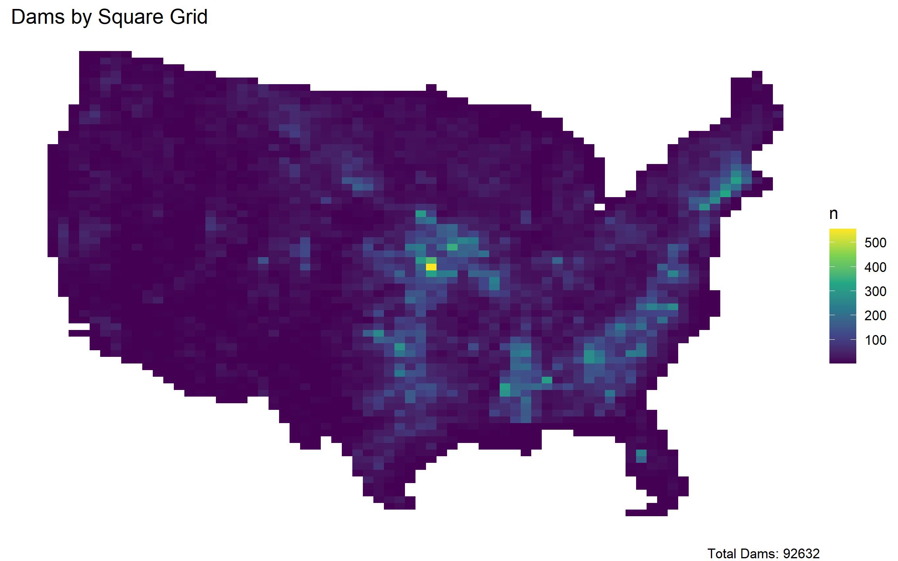
plot_dams(hexagon_dams, "Dams by Hexagonal Grid")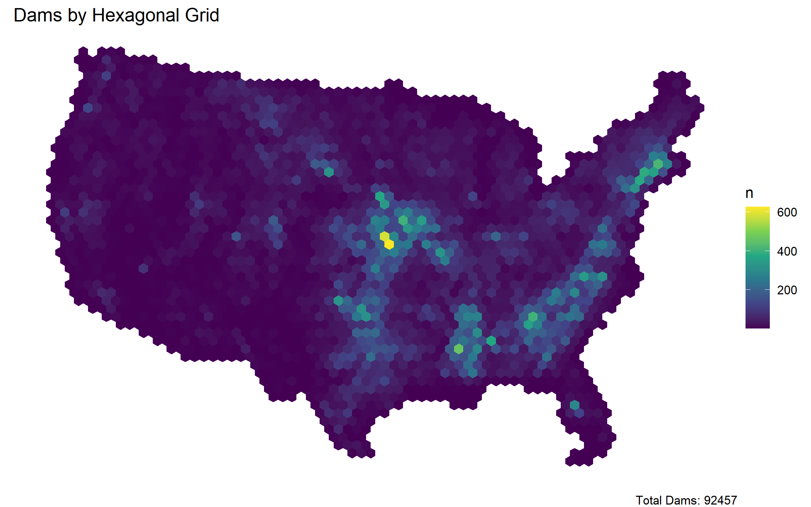
Policy Analysis: Tessellation and Decision-Making
Now that you have dam counts across all five tessellation methods, compare the results. Specifically:
a. Create a side-by-side visualization (faceted or small multiples) showing dam clustering under each of the five tessellations. Use patchwork or cowplot to arrange the 5 plots you created in Step 3.5 for direct visual comparison.
library(cowplot)
p1 <- plot_dams(counties_dams, "Dams by County")
p2 <- plot_dams(voronoi_dams, "Dams by Voronoi Tessellation")
p3 <- plot_dams(triangulated_dams, "Dams by Delaunay Triangulation")
p4 <- plot_dams(square_dams, "Dams by Square Grid")
p5 <- plot_dams(hexagon_dams, "Dams by Hexagonal Grid")
plot_grid(p1, p2, p3, p4, p5,
ncol = 2,
rel_heights = c(.8, .8, .8))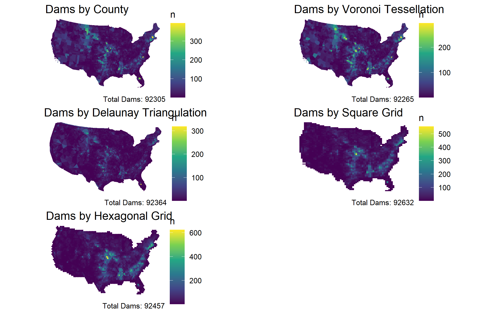
b. Identify 2–3 geographic regions where tessellation choice produces substantially different patterns (e.g., one method shows a clear hotspot while another shows diffuse distribution). For each region, describe the pattern difference and explain why the tessellation geometry creates divergent results. Reference the characteristics from your Q2 summary (number of tiles, mean area, standard deviation).
c. Which single tessellation would you recommend to a dam operations manager seeking to understand geographic clustering? Justify your choice by addressing: - Does the tessellation align with natural or management decision-making units (e.g., river basins, states, hydrologic regions)? - Does it reveal meaningful patterns without over-fragmenting the landscape or creating artificial boundaries? - How does MAUP influence your recommendation—are other tessellations equally valid, just for different questions? - How did simplification affect your choice? Would a coarser or finer simplification (different keep percentage) change your recommendation? - What does “best supports management decisions” mean concretely in your context—does it matter more that hot spots are obvious, or that boundaries align with jurisdictions?
Your answer should be 3–4 paragraphs and grounded in the actual visualizations and patterns you observe from your tessellation comparisons.
A good tessellation for dam management should show clustering clearly without strong bias from uneven area sizes. From my results above, counties and Voronoi are less reliable because they have high variation in area (high SD), which created strong but sometimes misleading hotspots in places like the Northern Great Plains and the Western US. They do loosely match real management boundaries like states or administrative regions, but their varying sizes make comparisons uneven and can exaggerate patterns.
Delaunay triangulation captures the most detail because it uses many small polygons (mean ~1290 lower SD), which revealed finer clustering patterns. However, it can over-fragment the landscape and does not align with real management units like river basins or states. Square and hex grids are more consistent since all cells are equal in size (SD = 0), which removes area bias and makes comparisons fairer, but they also smooth out some hotspots.
MAUP is central because each tessellation changes how the same dam data appears. Some methods emphasize administrative structure (counties), others emphasize proximity (Voronoi), fine detail (triangulation), or uniform comparison (grids). This means all are valid, but they support different types of questions rather than one “correct” view.
In terms of simplification, a more level could hide smaller clusters, while a finer level could increase noise and fragmentation. For me “best supports management decisions” means producing clear and stable hotspot patterns rather than perfect boundaries. Overall, Delaunay Triangulation or the Hexagonal Grid are best, depending on whether the goal is detailed analysis (triangulation) or stable, easy-to-interpret clustering (hex grid), assuming that agencies and mangers will work together across administrative boundaries.
The NID provides a comprehensive data dictionary here. In it we find that dam purposes are designated by a character code.
These are shown below for convenience (built using knitr on a data.frame called nid_classifier):
| abbr | purpose |
|---|---|
| I | Irrigation |
| H | Hydroelectric |
| C | Flood Control |
| N | Navigation |
| S | Water Supply |
| R | Recreation |
| P | Fire Protection |
| F | Fish and Wildlife |
| D | Debris Control |
| T | Tailings |
| G | Grade Stabilization |
| O | Other |
In the data dictionary, we see a dam can have multiple purposes.
In these cases, the purpose codes are concatenated in order of decreasing importance. For example, SCR would indicate the primary purposes are Water Supply, then Flood Control, then Recreation.
A standard summary indicates there are over 400 unique combinations of dam purposes:
unique(dams2$PURPOSES) %>% length()[1] 0To overcome this data structure limitation, we can identify how many dams serve each purpose by splitting the PURPOSES values (strsplit) and tabulating the unlisted results as a data.frame. Effectively this is double/triple/quadruple counting dams bases on how many purposes they serve:
The result of this would indicate:
Your task is to create point-in-polygon counts for at least 4 of the above dam purposes:
You will use grepl to filter the complete dataset to those with your chosen purpose
Remember that grepl returns a boolean if a given pattern is matched in a string
grepl is vectorized so can be used in dplyr::filter
For example:
# Find flood control dams in the first 5 records:
dams2$PURPOSES[1:5]NULLgrepl("F", dams2$PURPOSES[1:5])logical(0)For your analysis, choose at least four of the above codes, and describe why you chose them. Then for each of them, create a subset of dams that serve that purpose using dplyr::filter and grepl
Codes:
Finally, use your point-in-polygon function to count each subset across your cropped tessellation from Q1.4 (e.g., hexagon_clipped or square_clipped).
#Filter based on code above
##note- purposes column in dams2 does not use this code
dams_flood <- dams2 |>
dplyr::filter(grepl("Flood Risk Reduction", .data$purposes))
dams_hydro <- dams2 |>
dplyr::filter(grepl("Hydroelectric", .data$purposes))
dams_fire <- dams2 |>
dplyr::filter(grepl("Fire Protection", .data$purposes))
dams_debris <- dams2 |>
dplyr::filter(grepl("Debris Control", .data$purposes))
flood_hexagon <- point_polygon(dams_flood, hexagon_tess, "id")
hydro_hexagon <- point_polygon(dams_hydro, hexagon_tess, "id")
fire_hexagon <- point_polygon(dams_fire, hexagon_tess, "id")
debris_hexagon <- point_polygon(dams_debris, hexagon_tess, "id")Now use your plotting function from Q3 to map these counts on the cropped tessellation.
But! you will use gghighlight to only color those tiles where the count (n) is greater then the (mean + 1 standard deviation) of the set
Since your plotting function returns a ggplot object already, the gghighlight call can be added “+” directly to the function.
The result of this exploration is to highlight the areas of the country with the most
#Flood Control
plot_dams(flood_hexagon, "Flood Control Dams") +
gghighlight(
n > (mean(flood_hexagon$n, na.rm = TRUE) +
sd(flood_hexagon$n, na.rm = TRUE)))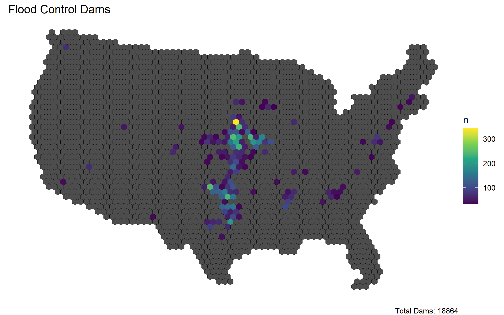
#Hydroelectric
plot_dams(hydro_hexagon, "Hydroelectric Dams") +
gghighlight(
n > (mean(hydro_hexagon$n, na.rm = TRUE) +
sd(hydro_hexagon$n, na.rm = TRUE)))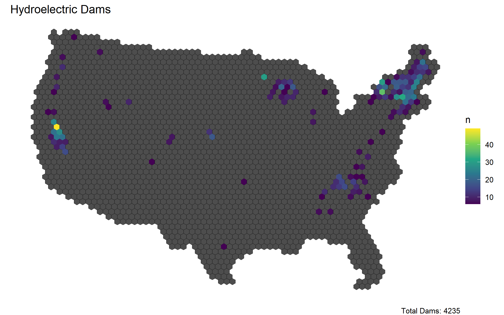
#Fire Protection
plot_dams(fire_hexagon, "Fire Protection Dams") +
gghighlight(
n > (mean(fire_hexagon$n, na.rm = TRUE) +
sd(fire_hexagon$n, na.rm = TRUE)))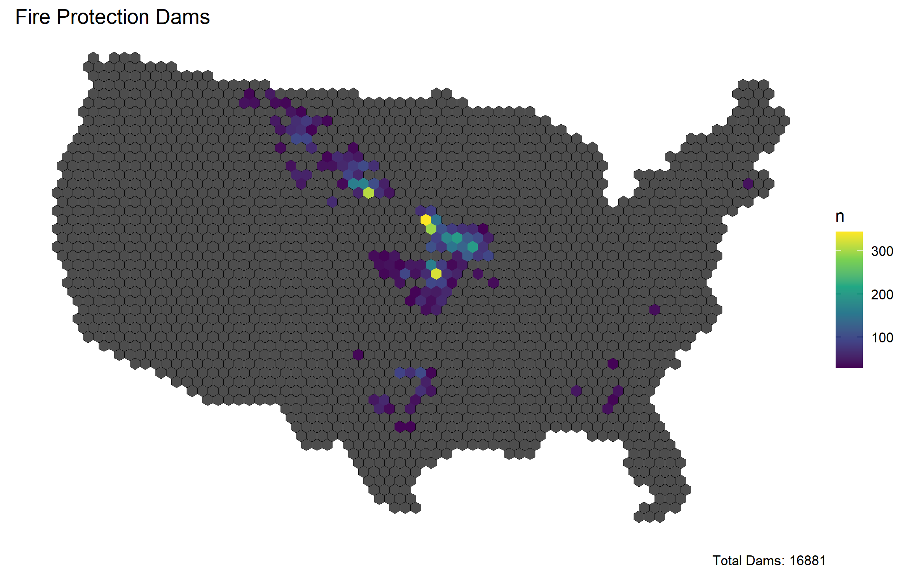
#Debris Control
plot_dams(debris_hexagon, "Debris Control Dams") +
gghighlight(
n > (mean(debris_hexagon$n, na.rm = TRUE) +
sd(debris_hexagon$n, na.rm = TRUE)))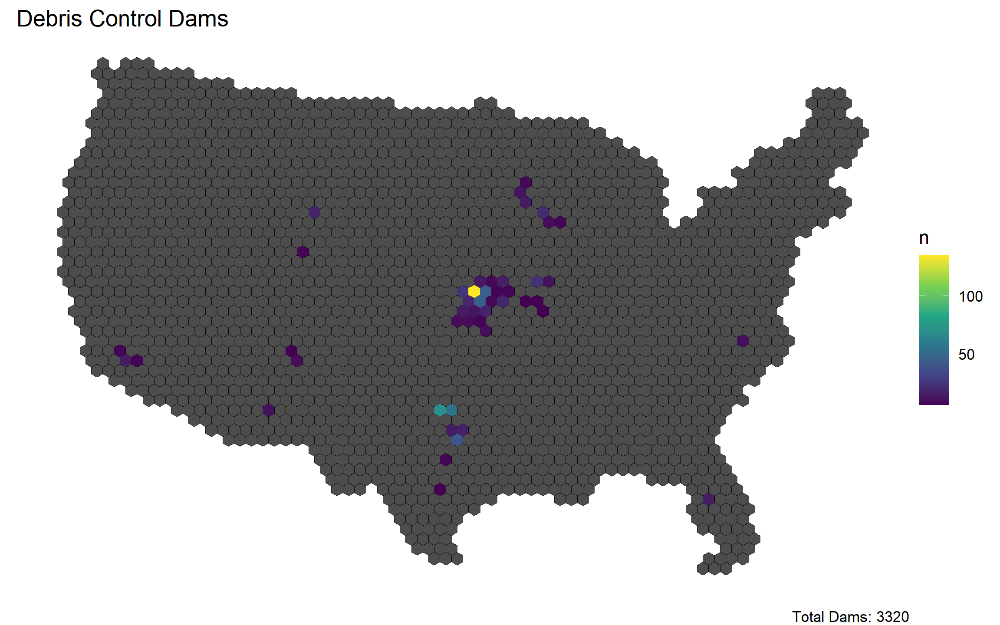
Comment on the geographic distribution of dams you found. Does it make sense? How might the tessellation you chose impact your findings? How does the distribution of dams coincide with other geographic factors such as river systems, climate, ect?
Flood control dams (≈18,800) are heavily clustered across the central U.S. (Mississippi/Missouri/Arkansas basins), which is expected because this region has floodplains and major river networks that require large-scale flood mitigation infrastructure. Hydroelectric dams (≈4,200) are in some areas with strong elevation change and river energy potential, such as California and the the Northeast, reflecting where hydropower is most viable.
Fire protection dams (≈16,800) form a broad diagonal pattern from the northern Rockies area, then through the central Plains into Texas, which aligns with drier, wildfire-prone regions. Debris control dams (≈3,300) are more scattered but still cluster in parts of the western and south-central U.S., consistent with erosion-prone landscapes and flash-flood regions.
Using a hexagonal tessellation likely strengthens the interpretation of these patterns by smoothing irregular administrative boundaries and emphasizing continuous regional trends (like river basins and climate zones). However, it also slightly generalizes local variation, making clusters appear more uniform. Also, he differences in totals also matter; flood and fire control dominate numerically, so their patterns appear more continuous, while hydro and debris control are sparser and naturally look more fragmented.
Optional: Connect to Q6 — For purposes you chose in Q4, hypothesize in 1–2 sentences: “Will [irrigation/hydroelectric] dams show the same LISA hotspots as all dams in Q6, or different patterns? Why?” After completing Q6, revisit this hypothesis.
Flood control and fire protection dams will show similar LISA hotspots to all dams because they have large totals (~18,800 and ~16,800) and are widely distributed across major river systems. In contrast, hydroelectric (~4,200) and debris control (~3,300) dams will likely show different hotspot patterns since they are fewer and more geographically constrained.
Dam characteristics—such as age, surface area, storage capacity, and purpose—vary geographically. Understanding the spatial structure of these relationships is foundational to spatial regression modeling (upcoming topics). In this question, you’ll examine whether dam attributes exhibit spatial dependence and assess whether neighboring tiles have correlated characteristics.
Standard regression assumes observations are independent. But spatial data often violates this: dams in the Pacific Northwest likely share design and management practices, leading to spatially correlated residuals. This spatial dependence can bias confidence intervals and inflate significance tests in standard OLS regression.
The solution involves spatial lag models (Spatial Autoregressive, SAR) or spatial error models (SEM) that explicitly model dependence via neighbor relationships. This lab asks: Do your tessellation neighborhoods reveal spatial structure in dam attributes?
For this question, use your cropped tessellation from Q1.4 (your recommended tessellation from Q3, clipped to the CONUS boundary). You’ll examine whether dam attributes (age, size, count) are spatially autocorrelated—evidence that neighboring tiles have similar values, violating independence assumptions.
Aggregate Dam Attributes by Tile
Using your cropped tessellation from Q1.4 (your recommended grid from Q3, clipped to CONUS boundary), compute mean and variance of key dam attributes within each tile. The NID dataset typically includes:
year_completed or similar (compute mean age per tile)surface_area_acres or normal_pool_elevation (compute mean per tile)purposes field (compute dominant purpose per tile; count of dams by purpose)Aggregate as follows:
# Suggested workflow (write your own implementation):
# 1) spatial join dams to your cropped tessellation
# 2) group by tile id and summarize n_dams, mean_year_completed, mean_surface_area
# 3) join summaries back to geometry and preserve zero-dam tiles
# 4) inspect distributions before mappingProduce visualizations showing spatial patterns:
Do you see geographic clustering of old vs. new dams? Large vs. small dams?
Important note- currently there are na’s in the data. This will impact map visualization below. This will be corrected in 5.2.
hex_summary <- hexagon_tess |>
sf::st_join(dams2) |>
dplyr::group_by(id) |>
dplyr::summarise(
n_dams = dplyr::n(),
mean_year_completed = mean(year_completed),
var_year_completed = var(year_completed),
mean_surface_area = mean(surface_area_acres),
var_surface_area = var(surface_area_acres),
.groups = "drop")
hexagon_dams_summary <- hexagon_tess |>
dplyr::left_join(
sf::st_drop_geometry(hex_summary),
by = "id") |>
dplyr::mutate(
n_dams = ifelse(is.na(n_dams), 0, n_dams))
#Check
summary(hexagon_dams_summary$n_dams) #distribution of dam counts Min. 1st Qu. Median Mean 3rd Qu. Max.
1.00 4.00 17.00 40.04 45.00 624.00 summary(hexagon_dams_summary$mean_year_completed) #distribution of average year Min. 1st Qu. Median Mean 3rd Qu. Max. NA's
1851 1948 1959 1957 1968 2016 1499 summary(hexagon_dams_summary$mean_surface_area) #distribution of average size Min. 1st Qu. Median Mean 3rd Qu. Max. NA's
0.0 26.3 97.7 4504.8 429.3 2531975.9 1434 ggplot() +
geom_sf(data = hexagon_dams_summary,
aes(fill = mean_year_completed),
color = NA) +
scale_fill_viridis_c() +
labs(title = "Mean Dam Age by Tile") +
theme_void()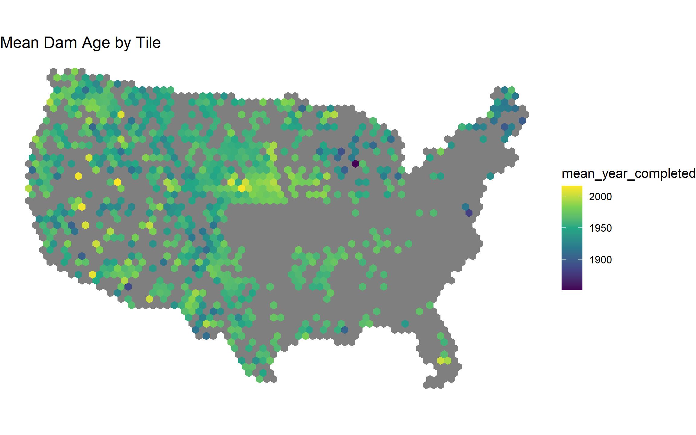
ggplot() +
geom_sf(data = hexagon_dams_summary,
aes(fill = mean_surface_area),
color = NA) +
scale_fill_viridis_c(trans = "log10") + #fix extreme right skew
labs(title = "Mean Dam Surface Area by Tile (Log Scale)") +
theme_void()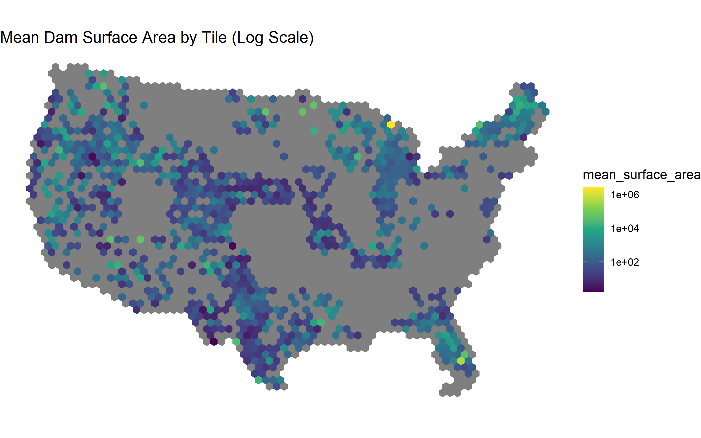
#From Q3
plot_dams(hexagon_dams, "Dam Count by Tile")Neighbor Correlation: Local Spatial Variation
For your tessellation’s neighbor matrix (from Q6), compute the spatial lag of dam attributes: the average value of an attribute in a tile’s neighbors. This reveals whether spatial neighbors have similar dam attributes—a key signal that observations are not independent (violating OLS assumptions).
Many tiles may have zero dams (NAs for attributes like mean_year_completed, mean_surface_area). When you compute the spatial lag via matrix multiplication, these NAs propagate and can cause cor() to fail with “no complete element pairs.”
Solution: Impute before spatial lag calculation
This preserves statistical integrity: neighbors’ contributions are computed correctly, but you only correlate where real observations exist.
# Suggested workflow (write your own implementation):
# 1) build vectors for count, age, and size attributes by tile
# 2) handle NAs explicitly before matrix multiplication
# 3) compute spatial lag as W_std %*% attribute
# 4) correlate each attribute with its lag
# 5) report values and classify as weak/moderate/strong with your own thresholdsSummarize in a table:
# Create a compact summary table with:
# - attribute name
# - correlation with spatial lag
# - qualitative strength label
# Then add a 1-2 sentence interpretation below the table.#Create weighted neighbor matrix (w_std) from Q6
#1) Create neighbor matrix (1 = neighbors, 0 = not)
W <- sf::st_touches(hexagon_dams_summary, sparse = FALSE)
#2) Remove self-neighbors
diag(W) <- 0
#3) Row-standardize (make rows sum to 1)
W_std <- W / rowSums(W)
#4) Fix rows with no neighbors (avoid NaN)
W_std[is.na(W_std)] <- 0#data frames
##3 attribute vectors (count, age, size)
##3 lag results
##3 correlations
#1) Build vectors for count, age, and size attributes by tile
count_attr <- hexagon_dams_summary$n_dams
age_attr <- hexagon_dams_summary$mean_year_completed
size_attr <- hexagon_dams_summary$mean_surface_area
#2) Handle NAs explicitly BEFORE matrix multiplication
#(a) Replace NAs with global mean (INLINE during lag computation)
mean_age <- mean(age_attr, na.rm = TRUE)
mean_size <- mean(size_attr, na.rm = TRUE)
mean_cnt <- mean(count_attr, na.rm = TRUE)
#3) Compute spatial lag as W_std %*% attribute
#(b) Spatial lag computed on imputed data (INLINE)
lag_age <- W_std %*% ifelse(is.na(age_attr), mean_age, age_attr)
lag_size <- W_std %*% ifelse(is.na(size_attr), mean_size, size_attr)
lag_count <- W_std %*% ifelse(is.na(count_attr), mean_cnt, count_attr)
#4) Correlate each attribute with its lag
#(c) Use ONLY tiles with original (non-NA) values
cor_age <- cor(age_attr[!is.na(age_attr)],
lag_age[!is.na(age_attr)])
cor_size <- cor(size_attr[!is.na(size_attr)],
lag_size[!is.na(size_attr)])
cor_count <- cor(count_attr[!is.na(count_attr)],
lag_count[!is.na(count_attr)])
# 5) Report values and classify strength
cor_age[1] 0.4311114cor_size[1] -0.001315245cor_count[1] 0.8393485classify_corr <- function(x) {
if (abs(x) < 0.3) return("weak")
else if (abs(x) < 0.6) return("moderate")
else return("strong")
}
classify_corr(cor_age)[1] "moderate"classify_corr(cor_size)[1] "weak"classify_corr(cor_count)[1] "strong"#Summary table
corr_table <- data.frame(
attribute = c("Dam Count", "Mean Year Completed", "Mean Surface Area"),
correlation = c(cor_count, cor_age, cor_size),
strength = c(
classify_corr(cor_count),
classify_corr(cor_age),
classify_corr(cor_size)
)
)
corr_table attribute correlation strength
1 Dam Count 0.839348535 strong
2 Mean Year Completed 0.431111400 moderate
3 Mean Surface Area -0.001315245 weakInterpretation: According to the table, the dam count has the strongest correlation, meaning areas with lots of dams tend to be near other high-density areas. Dam age has moderate clustering, and surface area has almost no spatial pattern, meaning dam size varies more based on specific conditions instead of location.
Global Question: Do neighboring tiles resemble each other overall, or is the pattern weak?
Create a single Moran’s I scatterplot for one dam attribute from Step 5.2 (for example, mean year completed or dam count). Use standardized values on both axes: the attribute on the x-axis and the spatial lag on the y-axis. The plot should show whether points concentrate along the diagonal or remain widely dispersed.
Your interpretation should focus on the overall pattern, not on specific regions. In particular, explain whether the correlation from Step 5.2 suggests strong, moderate, or weak spatial dependence and whether the scatterplot supports that conclusion.
Do not create a geographic map here. Save local hotspot mapping for Q6.
Why standardize? Centering and scaling puts the attribute and spatial lag on the same scale (mean=0, SD=1), making it easy to identify quadrants and interpret outliers.
scale(x, center=TRUE, scale=TRUE)[, 1]Returns a numeric vector (not a matrix). Use [, 1] to extract it, or use as.vector() explicitly.
# Suggested workflow (write your own implementation):
# 1) standardize the selected attribute and its spatial lag
# 2) assign HH / LL / HL / LH quadrants by sign of (z, lag_z)
# 3) produce a Moran scatterplot with dashed axes at 0
# 4) report quadrant counts and interpret what dominates# 1) STANDARDIZE VARIABLES
#Mean Year Completed (Age)
z_age <- scale(age_attr, center = TRUE, scale = TRUE)[, 1]
z_lag_age <- scale(lag_age, center = TRUE, scale = TRUE)[, 1]
#Dam Count
z_count <- scale(count_attr, center = TRUE, scale = TRUE)[, 1]
z_lag_count <- scale(lag_count, center = TRUE, scale = TRUE)[, 1]
#Mean Surface Area (Size)
z_size <- scale(size_attr, center = TRUE, scale = TRUE)[, 1]
z_lag_size <- scale(lag_size, center = TRUE, scale = TRUE)[, 1]
#2) MORAN QUADRANTS
#Age quadrants
quad_age <- ifelse(z_age >= 0 & z_lag_age >= 0, "HH",
ifelse(z_age < 0 & z_lag_age < 0, "LL",
ifelse(z_age >= 0 & z_lag_age < 0, "HL", "LH")))
#Count quadrants
quad_count <- ifelse(z_count >= 0 & z_lag_count >= 0, "HH",
ifelse(z_count < 0 & z_lag_count < 0, "LL",
ifelse(z_count >= 0 & z_lag_count < 0, "HL", "LH")))
#Size quadrants
quad_size <- ifelse(z_size >= 0 & z_lag_size >= 0, "HH",
ifelse(z_size < 0 & z_lag_size < 0, "LL",
ifelse(z_size >= 0 & z_lag_size < 0, "HL", "LH")))
#3) MORAN SCATTERPLOTS
#Age plot
ggplot(data.frame(z_age, z_lag_age, quad_age)) +
geom_point(aes(x = z_age, y = z_lag_age, color = quad_age), alpha = 0.6) +
geom_hline(yintercept = 0, linetype = "dashed") +
geom_vline(xintercept = 0, linetype = "dashed") +
labs(title = "Moran Scatterplot: Mean Year Completed",
x = "Standardized Age",
y = "Standardized Spatial Lag") +
theme_minimal()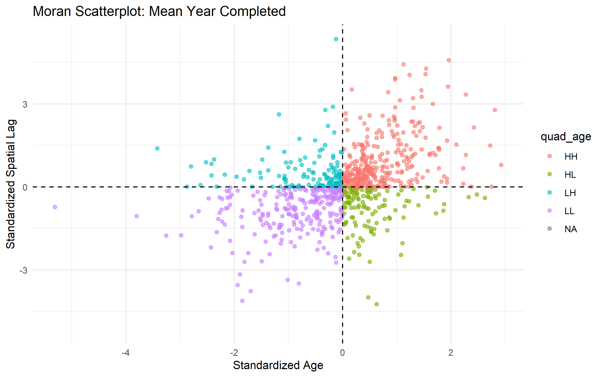
#Count plot
ggplot(data.frame(z_count, z_lag_count, quad_count)) +
geom_point(aes(x = z_count, y = z_lag_count, color = quad_count), alpha = 0.6) +
geom_hline(yintercept = 0, linetype = "dashed") +
geom_vline(xintercept = 0, linetype = "dashed") +
labs(title = "Moran Scatterplot: Dam Count",
x = "Standardized Count",
y = "Standardized Spatial Lag") +
theme_minimal()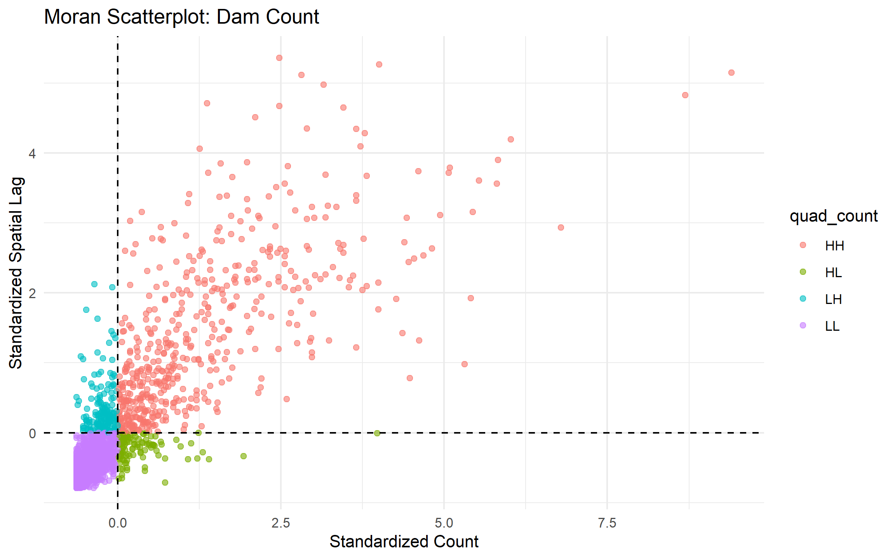
#Size plot
ggplot(data.frame(z_size, z_lag_size, quad_size)) +
geom_point(aes(x = z_size, y = z_lag_size, color = quad_size), alpha = 0.6) +
geom_hline(yintercept = 0, linetype = "dashed") +
geom_vline(xintercept = 0, linetype = "dashed") +
labs(title = "Moran Scatterplot: Mean Surface Area",
x = "Standardized Size",
y = "Standardized Spatial Lag") +
theme_minimal()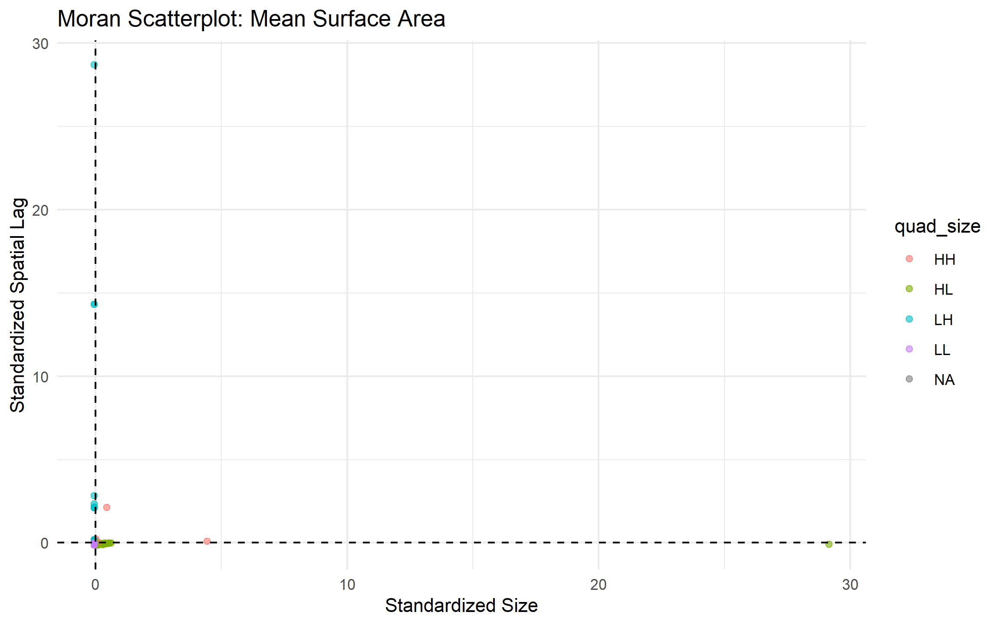
#Notes for me
##HH (High–High) High value tile surrounded by high neighbors → hotspot
##LL (Low–Low) Low value tile surrounded by low neighbors → coldspot
##HL (High–Low) High tile surrounded by low neighbors → outlier (edge)
##LH (Low–High) Low tile surrounded by high neighbors → outlier (edge)#4) QUADRANT COUNTS
table(quad_age)quad_age
HH HL LH LL
327 119 128 236 table(quad_count)quad_count
HH HL LH LL
525 111 170 1503 table(quad_size)quad_size
HH HL LH LL
7 38 38 792 Interpretation- According to the table, there is only a moderate correlation. The graph above supports this as there does seem to be a direction, but there is a lot of noise and the relationship does not seem very strong.
Global Interpretation of Spatial Patterns
Use this structure to organize your response:
Write 2–3 paragraphs (400–600 words) addressing:
a. Spatial Clustering Patterns (Quantitative + Geographic)
Which attributes show the strongest spatial lag correlations (from your Step 5.2 table)? Are correlations > 0.5 (strong) or 0.2–0.5 (moderate)?
For each attribute, describe whether the clustering seems broad or weak. Does the correlation make geographic sense? Why should dam characteristics be similar in neighboring areas?
b. Moran Scatterplot Interpretation (Visualization)
From your Moran scatterplot, describe the spatial distribution of points:
c. Spatial Structure Implications
What do these correlation values and Moran scatterplot patterns tell us about dam infrastructure spatial organization? Given your findings, write a brief conclusion synthesizing: - Are neighboring tiles genuinely similar in dam characteristics, or is the clustering weak? - What management or hydrologic factors drive these patterns? - How do findings from your Moran analysis here compare to what you observed in Q4 (dam purposes geography)?
Note: In future weeks, we’ll explore how spatial structure revealed here relates to statistical modeling of dam attributes.
Interpretation:
Dam count shows very strong clustering, with a correlation of about ~0.84, meaning areas with many dams tend to be near other areas with many dams. The mean year completed has a moderate clustering with a ~0.43 correlation, suggesting neighboring regions often have dams built in similar time periods, but the pattern is not consistent everywhere. Mean surface area shows almost no spatial correlation (at about -0.001), indicating dam size does not have any meaningful spatial patterns and varies more locally. This also supports the brief explanation given above that dam count is often strongly correlated because high dam density naturally creates neighbors with many dams, and dam age can show clustering if dams were built in regionally coherent eras, such as 1930s TVA construction or 1960s–70s Western expansion.
In terms of spatial autocorrelation, both age and count scatterplots show positive relationships, although count is much stronger. The age scatterplot shows a loose diagonal pattern, indicating a positive correlation between year completed and its spatial lag, which is consistent with the correlation table above. However, there are several outliers and more dispersed points across all the quadrants, suggesting weaker dependence and more heterogeneous neighborhoods, which explains why the relationship is only moderate. In contrast, the dam count scatterplot shows a much stronger and clearer positive relationship, with fewer outliers and most of the points concentrated in the HH quadrant. Finally, the surface area scatterplot shows almost no clear pattern or correlation, with points widely dispersed and very little overall spatial structure. It’s important to note that this plot has the least data points overall, possibly due to lack of data or na’s.
Overall, the results show that dam infrastructure is only partly spatially organized. Dam count has strong clustering, but dam age is only moderately clustered and dam size shows almost no spatial pattern. This suggests that some characteristics, like how many dams exist, are strongly influenced by regional factors, while others vary more locally and depend on factors other than location. These patterns likely come from things like shared river systems, regional water demand, and/or coordinated infrastructure planning, while dam size depends more on specific site conditions such as local geography or engineering issues. In Q4, I found that dams cluster in certain regions, and the Moran results support the same idea of regional clustering, but they also show that not all dam attributes behave the same way spatially, with some being much more structured than others.
Before moving to Q6, answer this question to verify your understanding:
Given your correlation results from Step 5.2, what do you expect to see in a Moran scatterplot (Q6)?
Write 2–3 sentences predicting Q6 outcomes before you compute LISA. After Q6, revisit this prediction to see if reality matched your expectation.
Predictions: Low correlation means outliers could be in either quadrant, possibly being influenced by the positive or negative relationship. Hotspots will be in major river systems, while coldspots will be in arid or less populated regions.
In this question, you’ll analyze LISA using your recommended tessellation from Q3 AND counties as a required comparison unit. This contrast (regular tessellation vs administrative boundaries) reveals MAUP much more clearly than comparing two regular grids.
While global statistics like Moran’s I (Q5) test for clustering “on average,” spatial patterns are rarely uniform. Some regions have dense hotspots (e.g., TVA region with concentrated dam infrastructure), while others are sparse coldspots (remote areas, deserts). Local Indicator of Spatial Autocorrelation (LISA) decomposes global clustering into local patterns, revealing where hotspots and coldspots occur—critical for targeted management interventions.
In this question, you’ll compute LISA using your cropped recommended tessellation (from Q1.4) and CONUS counties as the alternative support. This gives a direct test of how local clustering changes when analysis units shift from equal-area tiles to administrative units.
LISA compares each tile’s standardized dam count (\(z_i\)) to the standardized spatial lag (\(\text{lag}_z\)):
\[\text{lag}_z = \frac{1}{w_i} \sum_{j \in N(i)} w_{ij} z_j\]
where neighbors \(j \in N(i)\) are adjacent tiles, and \(w_{ij}\) = row-standardized adjacency weight (1 if touching, 0 otherwise).
The resulting LISA quadrants reveal: - High-High (HH): High dam count, high-count neighbors → hotspot - Low-Low (LL): Low dam count, low-count neighbors → coldspot
- High-Low (HL): High count, low neighbors → potentially isolated cluster edge - Low-High (LH): Low count, high neighbors → potential anomaly or outlier
Crop your tessellations to ensure consistent boundaries:
a. Use your recommended tessellation from Q3 (e.g., hexagon grid). Clip it to the CONUS boundary with st_filter(tessellation, boundary).
b. Use counties as the required alternative comparison unit (no extra clipping needed if your counties object is already CONUS-only).
c. For each clipped tessellation, recompute dam counts using point-in-polygon joining to ensure correct aggregation within the cropped geometry.
# Recommended tessellation (e.g., hexagon_grid)
hex_cropped <- st_filter(hexagon_grid, usa_boundary)
# Required comparison unit: counties (already CONUS)
county_units <- counties_sf
# Recompute dam counts on cropped grids
# (Use your point_in_polygon function or st_join + count pattern)
hex_dams <- st_join(hex_cropped, dams_sf) %>%
group_by(id) %>%
summarise(n = n(), .groups = "drop")
county_dams <- st_join(county_units, dams_sf) %>%
group_by(id) %>%
summarise(n = n(), .groups = "drop")Important: Cropping changes tile counts and boundary geometries. Re-aggregate dam counts after cropping to match the new tile geometry.
hex_cropped <- st_filter(hexagon_tess, conus_boundary)
county_units <- counties
#Recompute dam counts hexagon
hex_dams <- st_join(hex_cropped, dams2) %>%
group_by(id) %>%
summarise(n = n(), .groups = "drop")
#Recompute dam counts for counties
county_dams <- st_join(county_units, dams2) %>%
group_by(id) %>%
summarise(n = n(), .groups = "drop")Compute neighbors and spatial lag for your recommended tessellation:
a. Create the binary neighbor adjacency matrix using st_touches(..., sparse = FALSE). Include only tiles within the cropped boundary.
b. Remove self-neighbors: diag(W) <- 0
c. Row-standardize weights: divide each row by its sum, handling isolated tiles.
d. Compute spatial lag: \(\text{lag} = W_{\text{std}} \times \text{dam\_counts}\)
e. Standardize both dam counts and spatial lag (z-score normalization).
After computing the neighbor matrix, verify it’s valid:
# Check 1: Is the matrix symmetric? (for undirected adjacency)
all(neighbor_matrix == t(neighbor_matrix))
# Check 2: Are all rows row-standardized (divide by row sum)?
rowSums(neighbor_weights) # Should all be 1 (or 0 for isolated tiles)
# Check 3: Are there isolated tiles (no neighbors)?
sum(rowSums(neighbor_weights) == 0)
# If any isolated tiles, document how you'll handle them in spatial lag calculation#a- Build neighbor matrix using CROPPED hex grid (Q6-specific object)
W_Q6 <- sf::st_touches(hex_cropped, sparse = FALSE)
#b- Remove self-neighbors
diag(W_Q6) <- 0
#c- Row-standardize weights (spatial weight matrix)
W_std_Q6 <- W_Q6 / rowSums(W_Q6)
#Handle isolated tiles (no neighbors → avoid NaN)
W_std_Q6[is.na(W_std_Q6)] <- 0
#d- Spatial lag of dam counts (uses Q6 recomputed data)
lag_count_Q6 <- W_std_Q6 %*% hex_dams$n
#e- Standardize for Moran/LISA analysis
z_count_Q6 <- scale(hex_dams$n)[,1]
z_lag_Q6 <- scale(lag_count_Q6)[,1]
#Checks
all(W_Q6 == t(W_Q6))[1] TRUErowSums(W_std_Q6) [1] 1 1 1 1 1 1 1 1 1 1 1 1 1 1 1 1 1 1 1 1 1 1 1 1 1 1 1 1 1 1 1 1 1 1 1 1 1
[38] 1 1 1 1 1 1 1 1 1 1 1 1 1 1 1 1 1 1 1 1 1 1 1 1 1 1 1 1 1 1 1 1 1 1 1 1 1
[75] 1 1 1 1 1 1 1 1 1 1 1 1 1 1 1 1 1 1 1 1 1 1 1 1 1 1 1 1 1 1 1 1 1 1 1 1 1
[112] 1 1 1 1 1 1 1 1 1 1 1 1 1 1 1 1 1 1 1 1 1 1 1 1 1 1 1 1 1 1 1 1 1 1 1 1 1
[149] 1 1 1 1 1 1 1 1 1 1 1 1 1 1 1 1 1 1 1 1 1 1 1 1 1 1 1 1 1 1 1 1 1 1 1 1 1
[186] 1 1 1 1 1 1 1 1 1 1 1 1 1 1 1 1 1 1 1 1 1 1 1 1 1 1 1 1 1 1 1 1 1 1 1 1 1
[223] 1 1 1 1 1 1 1 1 1 1 1 1 1 1 1 1 1 1 1 1 1 1 1 1 1 1 1 1 1 1 1 1 1 1 1 1 1
[260] 1 1 1 1 1 1 1 1 1 1 1 1 1 1 1 1 1 1 1 1 1 1 1 1 1 1 1 1 1 1 1 1 1 1 1 1 1
[297] 1 1 1 1 1 1 1 1 1 1 1 1 1 1 1 1 1 1 1 1 1 1 1 1 1 1 1 1 1 1 1 1 1 1 1 1 1
[334] 1 1 1 1 1 1 1 1 1 1 1 1 1 1 1 1 1 1 1 1 1 1 1 1 1 1 1 1 1 1 1 1 1 1 1 1 1
[371] 1 1 1 1 1 1 1 1 1 1 1 1 1 1 1 1 1 1 1 1 1 1 1 1 1 1 1 1 1 1 1 1 1 1 1 1 1
[408] 1 1 1 1 1 1 1 1 1 1 1 1 1 1 1 1 1 1 1 1 1 1 1 1 1 1 1 1 1 1 1 1 1 1 1 1 1
[445] 1 1 1 1 1 1 1 1 1 1 1 1 1 1 1 1 1 1 1 1 1 1 1 1 1 1 1 1 1 1 1 1 1 1 1 1 1
[482] 1 1 1 1 1 1 1 1 1 1 1 1 1 1 1 1 1 1 1 1 1 1 1 1 1 1 1 1 1 1 1 1 1 1 1 1 1
[519] 1 1 1 1 1 1 1 1 1 1 1 1 1 1 1 1 1 1 1 1 1 1 1 1 1 1 1 1 1 1 1 1 1 1 1 1 1
[556] 1 1 1 1 1 1 1 1 1 1 1 1 1 1 1 1 1 1 1 1 1 1 1 1 1 1 1 1 1 1 1 1 1 1 1 1 1
[593] 1 1 1 1 1 1 1 1 1 1 1 1 1 1 1 1 1 1 1 1 1 1 1 1 1 1 1 1 1 1 1 1 1 1 1 1 1
[630] 1 1 1 1 1 1 1 1 1 1 1 1 1 1 1 1 1 1 1 1 1 1 1 1 1 1 1 1 1 1 1 1 1 1 1 1 1
[667] 1 1 1 1 1 1 1 1 1 1 1 1 1 1 1 1 1 1 1 1 1 1 1 1 1 1 1 1 1 1 1 1 1 1 1 1 1
[704] 1 1 1 1 1 1 1 1 1 1 1 1 1 1 1 1 1 1 1 1 1 1 1 1 1 1 1 1 1 1 1 1 1 1 1 1 1
[741] 1 1 1 1 1 1 1 1 1 1 1 1 1 1 1 1 1 1 1 1 1 1 1 1 1 1 1 1 1 1 1 1 1 1 1 1 1
[778] 1 1 1 1 1 1 1 1 1 1 1 1 1 1 1 1 1 1 1 1 1 1 1 1 1 1 1 1 1 1 1 1 1 1 1 1 1
[815] 1 1 1 1 1 1 1 1 1 1 1 1 1 1 1 1 1 1 1 1 1 1 1 1 1 1 1 1 1 1 1 1 1 1 1 1 1
[852] 1 1 1 1 1 1 1 1 1 1 1 1 1 1 1 1 1 1 1 1 1 1 1 1 1 1 1 1 1 1 1 1 1 1 1 1 1
[889] 1 1 1 1 1 1 1 1 1 1 1 1 1 1 1 1 1 1 1 1 1 1 1 1 1 1 1 1 1 1 1 1 1 1 1 1 1
[926] 1 1 1 1 1 1 1 1 1 1 1 1 1 1 1 1 1 1 1 1 1 1 1 1 1 1 1 1 1 1 1 1 1 1 1 1 1
[963] 1 1 1 1 1 1 1 1 1 1 1 1 1 1 1 1 1 1 1 1 1 1 1 1 1 1 1 1 1 1 1 1 1 1 1 1 1
[1000] 1 1 1 1 1 1 1 1 1 1 1 1 1 1 1 1 1 1 1 1 1 1 1 1 1 1 1 1 1 1 1 1 1 1 1 1 1
[1037] 1 1 1 1 1 1 1 1 1 1 1 1 1 1 1 1 1 1 1 1 1 1 1 1 1 1 1 1 1 1 1 1 1 1 1 1 1
[1074] 1 1 1 1 1 1 1 1 1 1 1 1 1 1 1 1 1 1 1 1 1 1 1 1 1 1 1 1 1 1 1 1 1 1 1 1 1
[1111] 1 1 1 1 1 1 1 1 1 1 1 1 1 1 1 1 1 1 1 1 1 1 1 1 1 1 1 1 1 1 1 1 1 1 1 1 1
[1148] 1 1 1 1 1 1 1 1 1 1 1 1 1 1 1 1 1 1 1 1 1 1 1 1 1 1 1 1 1 1 1 1 1 1 1 1 1
[1185] 1 1 1 1 1 1 1 1 1 1 1 1 1 1 1 1 1 1 1 1 1 1 1 1 1 1 1 1 1 1 1 1 1 1 1 1 1
[1222] 1 1 1 1 1 1 1 1 1 1 1 1 1 1 1 1 1 1 1 1 1 1 1 1 1 1 1 1 1 1 1 1 1 1 1 1 1
[1259] 1 1 1 1 1 1 1 1 1 1 1 1 1 1 1 1 1 1 1 1 1 1 1 1 1 1 1 1 1 1 1 1 1 1 1 1 1
[1296] 1 1 1 1 1 1 1 1 1 1 1 1 1 1 1 1 1 1 1 1 1 1 1 1 1 1 1 1 1 1 1 1 1 1 1 1 1
[1333] 1 1 1 1 1 1 1 1 1 1 1 1 1 1 1 1 1 1 1 1 1 1 1 1 1 1 1 1 1 1 1 1 1 1 1 1 1
[1370] 1 1 1 1 1 1 1 1 1 1 1 1 1 1 1 1 1 1 1 1 1 1 1 1 1 1 1 1 1 1 1 1 1 1 1 1 1
[1407] 1 1 1 1 1 1 1 1 1 1 1 1 1 1 1 1 1 1 1 1 1 1 1 1 1 1 1 1 1 1 1 1 1 1 1 1 1
[1444] 1 1 1 1 1 1 1 1 1 1 1 1 1 1 1 1 1 1 1 1 1 1 1 1 1 1 1 1 1 1 1 1 1 1 1 1 1
[1481] 1 1 1 1 1 1 1 1 1 1 1 1 1 1 1 1 1 1 1 1 1 1 1 1 1 1 1 1 1 1 1 1 1 1 1 1 1
[1518] 1 1 1 1 1 1 1 1 1 1 1 1 1 1 1 1 1 1 1 1 1 1 1 1 1 1 1 1 1 1 1 1 1 1 1 1 1
[1555] 1 1 1 1 1 1 1 1 1 1 1 1 1 1 1 1 1 1 1 1 1 1 1 1 1 1 1 1 1 1 1 1 1 1 1 1 1
[1592] 1 1 1 1 1 1 1 1 1 1 1 1 1 1 1 1 1 1 1 1 1 1 1 1 1 1 1 1 1 1 1 1 1 1 1 1 1
[1629] 1 1 1 1 1 1 1 1 1 1 1 1 1 1 1 1 1 1 1 1 1 1 1 1 1 1 1 1 1 1 1 1 1 1 1 1 1
[1666] 1 1 1 1 1 1 1 1 1 1 1 1 1 1 1 1 1 1 1 1 1 1 1 1 1 1 1 1 1 1 1 1 1 1 1 1 1
[1703] 1 1 1 1 1 1 1 1 1 1 1 1 1 1 1 1 1 1 1 1 1 1 1 1 1 1 1 1 1 1 1 1 1 1 1 1 1
[1740] 1 1 1 1 1 1 1 1 1 1 1 1 1 1 1 1 1 1 1 1 1 1 1 1 1 1 1 1 1 1 1 1 1 1 1 1 1
[1777] 1 1 1 1 1 1 1 1 1 1 1 1 1 1 1 1 1 1 1 1 1 1 1 1 1 1 1 1 1 1 1 1 1 1 1 1 1
[1814] 1 1 1 1 1 1 1 1 1 1 1 1 1 1 1 1 1 1 1 1 1 1 1 1 1 1 1 1 1 1 1 1 1 1 1 1 1
[1851] 1 1 1 1 1 1 1 1 1 1 1 1 1 1 1 1 1 1 1 1 1 1 1 1 1 1 1 1 1 1 1 1 1 1 1 1 1
[1888] 1 1 1 1 1 1 1 1 1 1 1 1 1 1 1 1 1 1 1 1 1 1 1 1 1 1 1 1 1 1 1 1 1 1 1 1 1
[1925] 1 1 1 1 1 1 1 1 1 1 1 1 1 1 1 1 1 1 1 1 1 1 1 1 1 1 1 1 1 1 1 1 1 1 1 1 1
[1962] 1 1 1 1 1 1 1 1 1 1 1 1 1 1 1 1 1 1 1 1 1 1 1 1 1 1 1 1 1 1 1 1 1 1 1 1 1
[1999] 1 1 1 1 1 1 1 1 1 1 1 1 1 1 1 1 1 1 1 1 1 1 1 1 1 1 1 1 1 1 1 1 1 1 1 1 1
[2036] 1 1 1 1 1 1 1 1 1 1 1 1 1 1 1 1 1 1 1 1 1 1 1 1 1 1 1 1 1 1 1 1 1 1 1 1 1
[2073] 1 1 1 1 1 1 1 1 1 1 1 1 1 1 1 1 1 1 1 1 1 1 1 1 1 1 1 1 1 1 1 1 1 1 1 1 1
[2110] 1 1 1 1 1 1 1 1 1 1 1 1 1 1 1 1 1 1 1 1 1 1 1 1 1 1 1 1 1 1 1 1 1 1 1 1 1
[2147] 1 1 1 1 1 1 1 1 1 1 1 1 1 1 1 1 1 1 1 1 1 1 1 1 1 1 1 1 1 1 1 1 1 1 1 1 1
[2184] 1 1 1 1 1 1 1 1 1 1 1 1 1 1 1 1 1 1 1 1 1 1 1 1 1 1 1 1 1 1 1 1 1 1 1 1 1
[2221] 1 1 1 1 1 1 1 1 1 1 1 1 1 1 1 1 1 1 1 1 1 1 1 1 1 1 1 1 1 1 1 1 1 1 1 1 1
[2258] 1 1 1 1 1 1 1 1 1 1 1 1 1 1 1 1 1 1 1 1 1 1 1 1 1 1 1 1 1 1 1 1 1 1 1 1 1
[2295] 1 1 1 1 1 1 1 1 1 1 1 1 1 1 1sum(rowSums(W_std_Q6) == 0)[1] 0LOCAL Question: WHERE specifically are high-high, low-low, high-low, and low-high clusters? (Answer: Geographic map showing which regions belong to which quadrant)
Two Visualizations:
a) Moran Scatterplot (Reference): - Same as Q5, showing which tile belongs to which quadrant - Primarily for reference; the interesting insight is now geographic
b) LISA Geographic Map (PRIMARY OUTPUT): - Choropleth map of your tessellation colored by LISA quadrant - HH (red) = hotspots with hotspot neighbors → TVA region, Colorado Basin, etc. - LL (blue) = coldspots with coldspot neighbors → Great Basin, deserts, etc. - HL (yellow) = anomalies: high counts surrounded by sparse tiles (cluster edges) - LH (cyan) = anomalies: sparse tiles surrounded by high-count neighbors (rare)
Key Interpretation: The LISA map reveals which specific regions exhibit local clustering. This is actionable: dense regions need intensive management; sparse regions need different strategies. The quadrant distribution (% of tiles in HH vs. LL) reveals whether the landscape is dominated by hotspots, coldspots, or mixed.
#Count plot for reference
ggplot(data.frame(z_count, z_lag_count, quad_count)) +
geom_point(aes(x = z_count, y = z_lag_count, color = quad_count), alpha = 0.6) +
geom_hline(yintercept = 0, linetype = "dashed") +
geom_vline(xintercept = 0, linetype = "dashed") +
labs(title = "Moran Scatterplot: Dam Count",
x = "Standardized Count",
y = "Standardized Spatial Lag") +
theme_minimal()
#LISA Map
#Make quads
lisa_class_Q6 <- ifelse(z_count_Q6 >= 0 & z_lag_Q6 >= 0, "HH",
ifelse(z_count_Q6 < 0 & z_lag_Q6 < 0, "LL",
ifelse(z_count_Q6 >= 0 & z_lag_Q6 < 0, "HL", "LH")))
#Attach results back to spatial object
hex_lisa_Q6 <- hex_cropped |>
dplyr::mutate(lisa = lisa_class_Q6)
ggplot(hex_lisa_Q6) +
geom_sf(aes(fill = lisa), color = NA) +
scale_fill_manual(values = c(
"HH" = "red", #hotspots with hotspot neighbors
"LL" = "blue", #coldspot with coldspot neighbors
"HL" = "yellow", #anomalies, high count with sparse tiles (cluster edges)
"LH" = "cyan")) + #anomalies, sparse tiles with high count neighbores (rare)
labs(title = "LISA Cluster Map: Dam Counts (Hex Grid)",
fill = "Cluster Type") +
theme_void()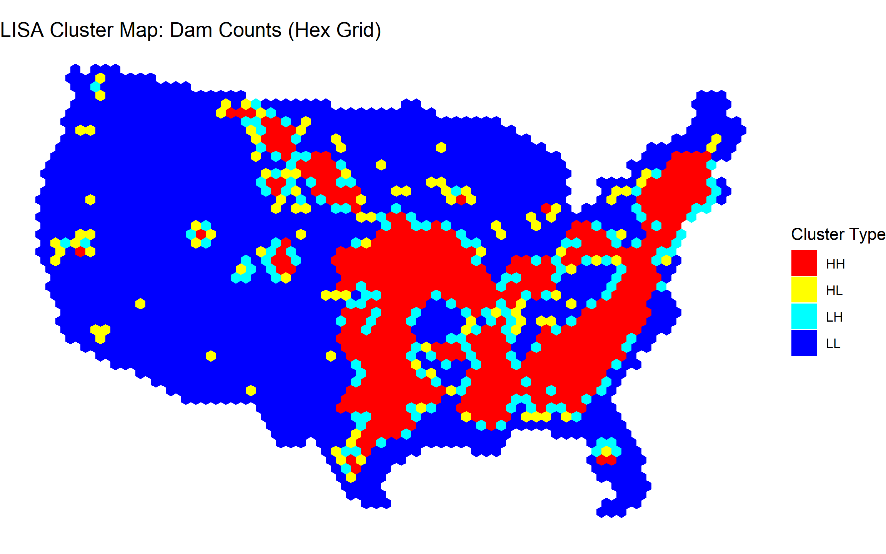
Comparison with required county baseline:
a. Repeat Steps 6.2–6.3 for counties.
W_county_Q6 <- sf::st_touches(county_units, sparse = FALSE)
diag(W_county_Q6) <- 0
W_std_county_Q6 <- W_county_Q6 / rowSums(W_county_Q6)
W_std_county_Q6[is.na(W_std_county_Q6)] <- 0
# Spatial lag of dam counts (county level)
lag_county_Q6 <- W_std_county_Q6 %*% county_dams$n
# Standardize for LISA
z_county_Q6 <- scale(county_dams$n)[,1]
z_lag_county_Q6 <- scale(lag_county_Q6)[,1]
#Make quads
lisa_county_Q6 <- ifelse(z_county_Q6 >= 0 & z_lag_county_Q6 >= 0, "HH",
ifelse(z_county_Q6 < 0 & z_lag_county_Q6 < 0, "LL",
ifelse(z_county_Q6 >= 0 & z_lag_county_Q6 < 0, "HL", "LH")))
county_lisa_Q6 <- county_units |>
dplyr::mutate(lisa = lisa_county_Q6)
#LISA Map
ggplot(county_lisa_Q6) +
geom_sf(aes(fill = lisa), color = NA) +
scale_fill_manual(values = c(
"HH" = "red",
"LL" = "blue",
"HL" = "yellow",
"LH" = "cyan")) +
labs(title = "LISA Cluster Map: Dam Counts (Counties)",
fill = "Cluster Type") +
theme_void()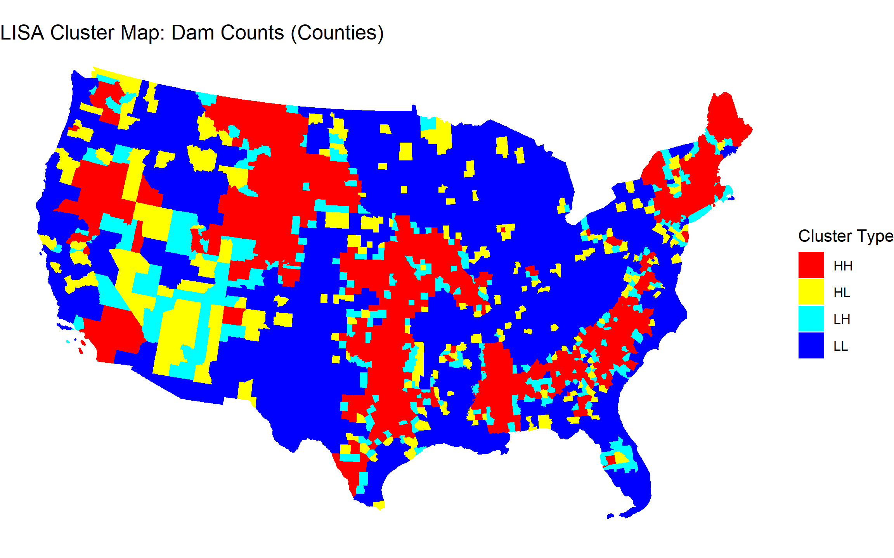
b. REQUIRED DELIVERABLE: Create side-by-side LISA maps of your chosen tessellation (from Q3) and counties in the same figure. Use identical quadrant labels and color mapping in both panels so visual differences reflect unit choice, not styling.
library(patchwork)
#Common scale for both
lisa_colors <- c(
"HH" = "red",
"LL" = "blue",
"HL" = "yellow",
"LH" = "cyan")
#Hex LISA
p_hex <- ggplot(hex_lisa_Q6) +
geom_sf(aes(fill = lisa), color = NA) +
scale_fill_manual(values = lisa_colors) +
labs(title = "Hexagon Tessellation (LISA)") +
theme_void()
#County LISA
p_county <- ggplot(county_lisa_Q6) +
geom_sf(aes(fill = lisa), color = NA) +
scale_fill_manual(values = lisa_colors) +
labs(title = "Counties (LISA)") +
theme_void()
p_hex | p_county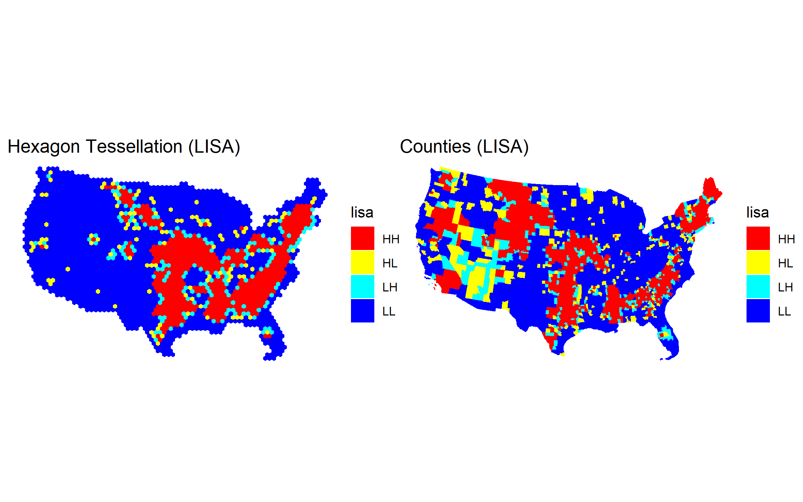
c. Quantitative comparison: For both units, count the number of polygons in each quadrant. Example output: - Hexagon: HH=15 tiles, LL=23 tiles, HL=5 tiles, LH=2 tiles - Counties: HH=205 counties, LL=1300 counties, HL=240 counties, LH=360 counties - Interpretation: Are quadrant distributions similar (robust LISA pattern) or different (MAUP sensitive at local scale)?
cat("Hexagon Counts")Hexagon Countsprint(table(hex_lisa_Q6$lisa))
HH HL LH LL
525 111 170 1503 cat("County Counts")County Countsprint(table(county_lisa_Q6$lisa))
HH HL LH LL
756 232 317 1803 Interpretation: The quadrant are very broadly similar in pattern, (ie- both show LL as the largest class and HH as the next most common), which means this is a generally robust LISA pattern across both. However, the exact counts differ a lot, especially in HL and LH categories, showing that the results are still somewhat MAUP-sensitive at the local scale.
d. Interpret: Which unit reveals clustering more clearly for your purpose? Do patterns align between your chosen tessellation and counties, or does MAUP (modifiable areal unit problem) create divergent local structure?
HH and LL show strong clustering in both units, indicating that the overall hotspot and coldspot structure is generally consistent between the hex grid and counties. Counties also show some additional clustering in the HL category, suggesting more edge or transitional effects in the countries units. There is some alignment between the two methods, especially in the Kansas to Texas region for HH and from North Dakota to Ohio for LL, where both approaches identify similar spatial patterns. However, MAUP still creates noticeable differences, particularly across much of the western United States (west of Colorado), where the clustering patterns diverge more strongly.
Geographic Interpretation and Management Implications
Write a 3–4 paragraph synthesis addressing:
a. Geographic hotspots and coldspots: Identify major clustering regions: - Which dams are in HH hotspots? (E.g., TVA dams, Colorado River dams, others?) - Which regions are LL coldspots? (Mountains, deserts, sparse-development areas?) - What management or hydrologic factors explain these patterns?
Specific region example: Choose one HH hotspot (e.g., Tennessee Valley Authority region, Colorado River Basin, California Central Valley) and describe three factors that explain why TVA dams or Colorado River dams cluster. Use geographic knowledge or brief web research if needed.
b. Outliers and anomalies: Are there notable HL or LH tiles? What might explain them?
c. Unit comparison: Does analysis unit choice (hexagon vs. county) affect LISA conclusions? How does MAUP operate at the local scale?
d. Implications for management: How does LISA output inform dam operations, reporting, or policy? - Where should multi-state coordination efforts focus? (HH hotspots) - Which regions have simple management structures? (LL coldspots) - How do your LISA findings from Q6 compare to the dam purpose patterns you identified in Q4? (E.g., do irrigation dams cluster the same way as all dams?) - Where do policies need special attention to local anomalies? (HL/LH outliers)
a. HH hotspots are mainly concentrated in more developed and heavily managed river systems, such as Colorado River Basin, the Tennessee Valley region, and parts of the central plains (Kansas–Texas areas as identified above) where dam infrastructure is dense. In contrast, LL coldspots are mostly found in sparsely populated or physically challenging regions such as the Rocky Mountains, Great Basin, and large parts of the desert Southwest, where there are fewer dams and less infrastructure overall. One clear HH hotspot example, especially on the counties map, is the (Upper) Colorado River Basin, where dam clustering is strong due to a few main factors. First, to my knowledge, the region has highly managed water resources because of the chronic water scarcity (espically in the last 20-30 years), meaning dams are essential for storage, allocation, and control across multiple states. Second, the steep elevation gradients and canyon landscapes are good for large reservoir and hydropower dam construction. Finally, long-standing interstate water agreements and federal infrastructure projects have led to coordinated dam development over time, reinforcing the spatial clustering.
b. There are noticeable HL and LH tiles in both the hexagon and county maps, but they are more scattered compared to HH and LL clusters. On the hexagon map, LH tiles seems to often act as transition or buffer zones between HH and LL regions, showing areas where low dam counts are surrounded by higher-density neighbors or vice versa. On the county map, HL and LH patterns are also scattered but show a small concentrated grouping in the lower western US (Nevada, Utah, Arizona), with about two-thirds of that cluster in HL and the remainder in LH. These outliers likely reflect localized geographic or management differences, such as isolated dam placement in otherwise low-density regions or natural barriers that disrupt continuous dam development.
c. Unit choice does affect the LISA results, showing MAUP does have an effect at the local scale. The hexagon tessellation produces smoother, more spatially consistent clustering patterns, while counties show more irregular and fragmented clusters due to their uneven, administrative boundaries. This leads to differences in where HL and LH outliers appear, even though the broader HH and LL hotspots are generally similar. Overall, MAUP at the local level changes the shape and sharpness of clusters rather than completely changing the overall result, so interpretation will depend on the spatial unit used.
d. The LISA results can help guide policies by identifying where dam infrastructure is strongly clustered versus isolated. HH hotspots such as in central U.S., should be the focus of multi-state coordination because dense dam networks cross political boundaries and require shared management for water supply, flood control, and infrastructure planning. LL coldspots, such as the Great Basin, deserts, and/or mountainous regions, have simpler management needs since there are fewer dams and less interconnected infrastructure, so local or state-level management is usually sufficient. HL and LH outliers are important because they highlight transition zones where dam density changes sharply, suggesting areas where management practices may not align smoothly across space. Compared to Q4, LISA patterns match well with the broad clustering of flood control and fire protection dams (Kansas to Texas area), which form continuous regions, while hydropower and debris dams are more fragmented and appear in smaller clusters.